Meta modeling¶
General purpose metamodels¶
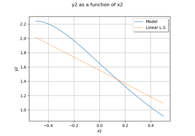
Create a linear least squares model
Create a linear least squares model

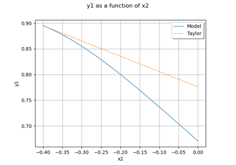
Taylor approximations
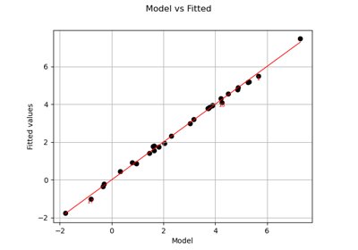
Create a linear model

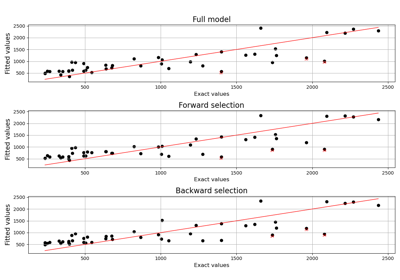
Perform stepwise regression

Polynomial chaos metamodel¶
Apply a transform or inverse transform on your polynomial chaos
Apply a transform or inverse transform on your polynomial chaos


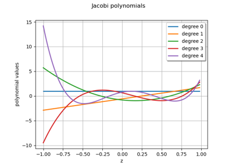
Polynomial chaos graphs

Create a polynomial chaos metamodel by integration on the cantilever beam
Create a polynomial chaos metamodel by integration on the cantilever beam


Create a polynomial chaos for the Ishigami function: a quick start guide to polynomial chaos
Create a polynomial chaos for the Ishigami function: a quick start guide to polynomial chaos
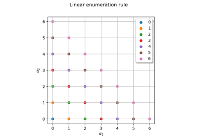
Plot enumeration rules


Kriging metamodel¶

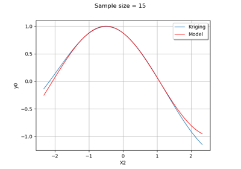
Kriging : multiple input dimensions
Kriging : multiple input dimensions
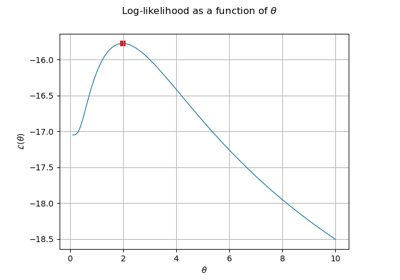
Kriging : draw the likelihood
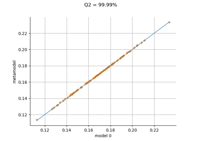
Kriging : cantilever beam model
Kriging : cantilever beam model

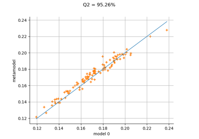
Kriging the cantilever beam model using HMAT
Kriging the cantilever beam model using HMAT

Example of multi output Kriging on the fire satellite model
Example of multi output Kriging on the fire satellite model
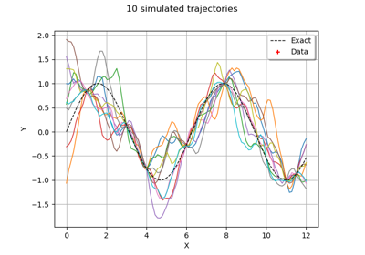
Kriging : generate trajectories from a metamodel
Kriging : generate trajectories from a metamodel
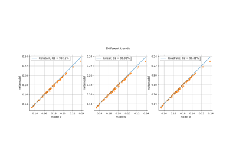
Kriging: choose a polynomial trend on the beam model
Kriging: choose a polynomial trend on the beam model

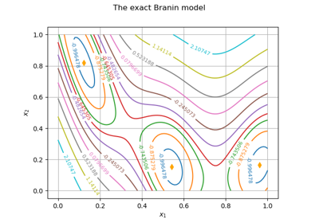
Kriging: metamodel of the Branin-Hoo function
Kriging: metamodel of the Branin-Hoo function
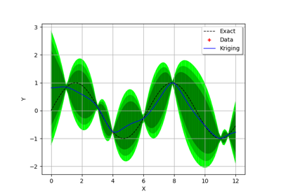
Kriging : quick-start
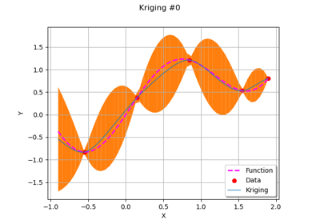
Sequentially adding new points to a kriging
Sequentially adding new points to a kriging
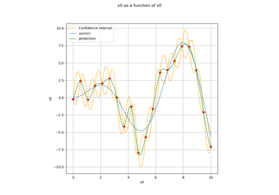
Advanced kriging

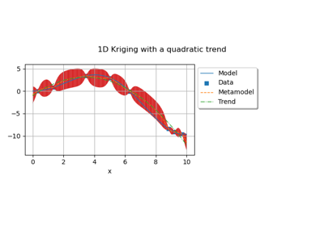
Kriging: choose a polynomial trend
Kriging: choose a polynomial trend

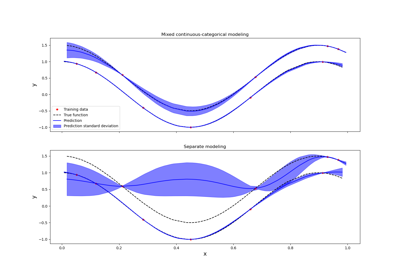
Kriging: metamodel with continuous and categorical variables
Kriging: metamodel with continuous and categorical variables